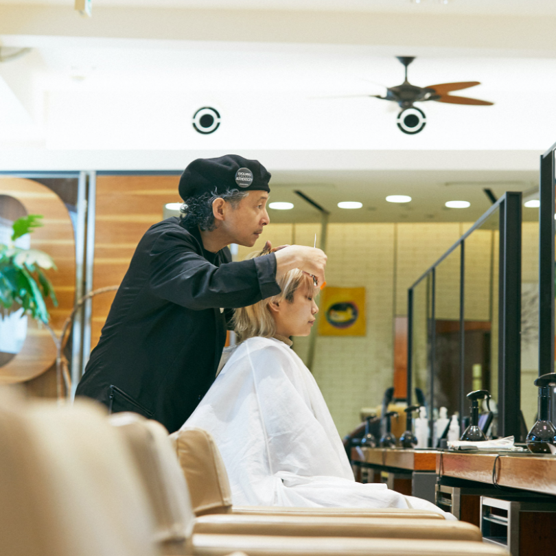
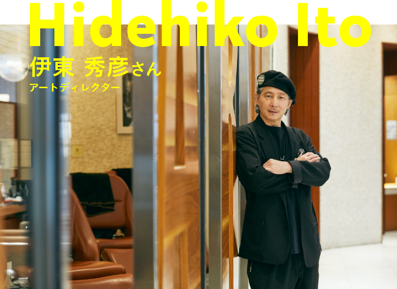
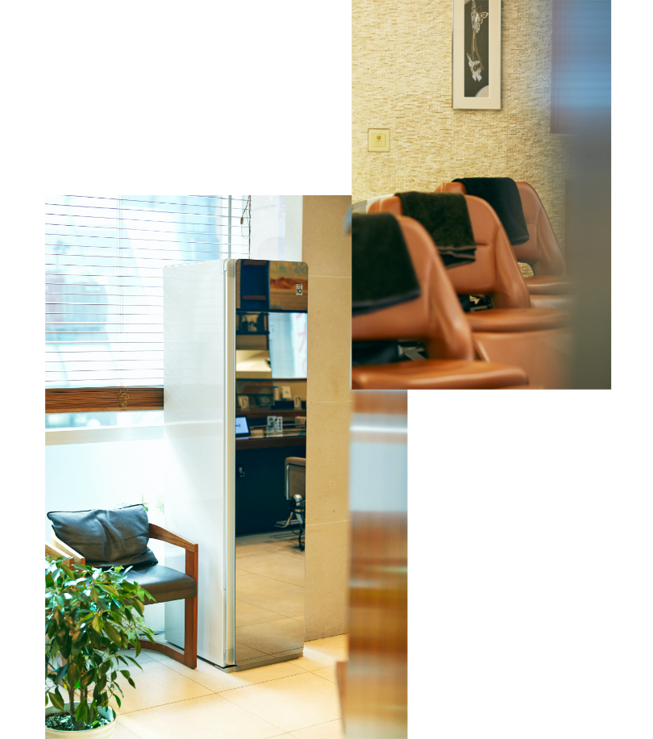
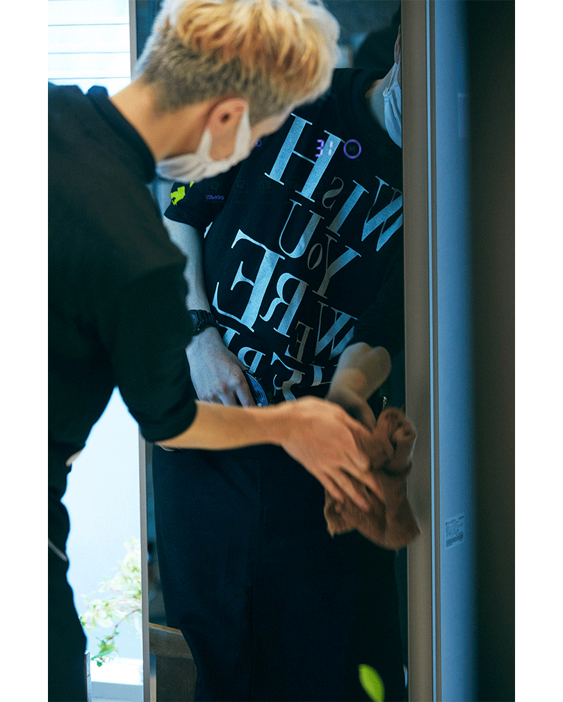
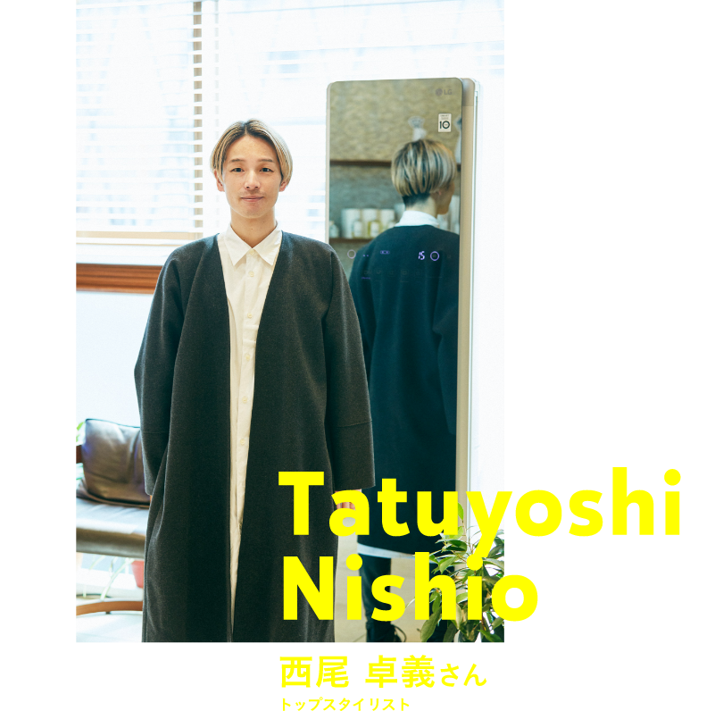
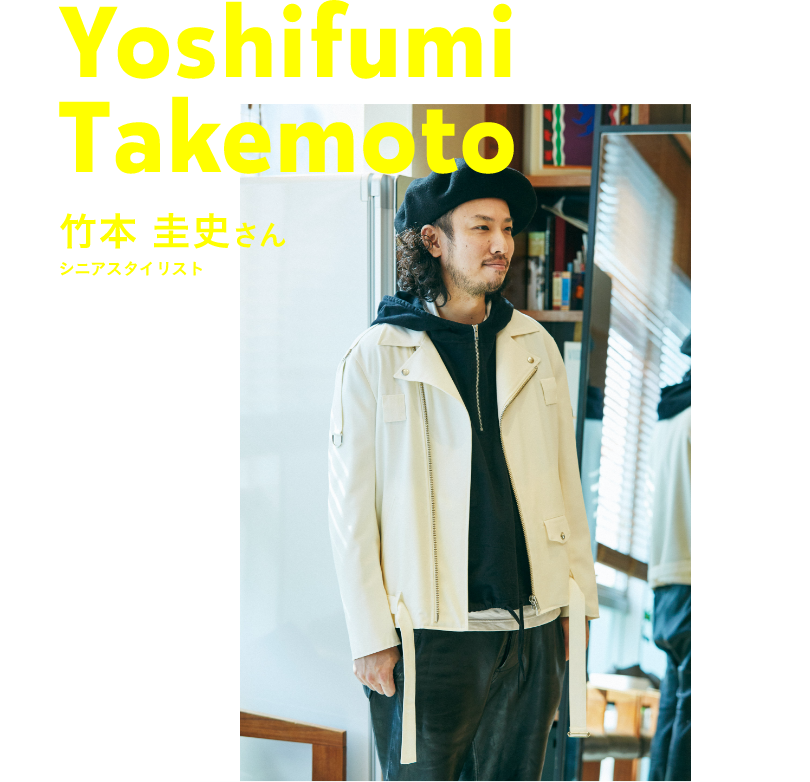

「実は数年前に一度見たことがあって、それからずっと気になっていたんです。まずシンプルに格好良かったのと、自宅で好きなタイミングで衣類がケアできるってすごくいいなと思って。やはり人と接する仕事ですから、身だしなみはきちんとしていたいので」
そうお話しをしてくれたのは、PEEK-A-BOOの初期メンバーである伊東秀彦さん。

2022.03.30
日本美容師界の開祖と言われることもある川島文夫さんが『PEEK-A-BOO川島文夫美容室』をオープンさせたのは1977年のこと。現在都内に９店舗を展開し、今なおシーンをリードするPEEK-A-BOOが、LG Stylerを取り入れた理由とは？

「サロンに導入したのは、シンプルにお客様に喜んでいただきたいから。サロンのお客様は短くても１時間弱。長ければ４時間ほど滞在する場合もあります。花粉やウイルスを気になさる方も多く、そういった方々へのサービスとしてすごくいいなと思ったんです」

「そもそもサロンって綺麗になりたくてくる場所じゃないですか。カットの後に人と会う人も多いですし、逆に仕事帰りに立ち寄ってくださる方も多い。そんな方々によりリフレッシュした気分でお帰りいただければと思って導入しました」
お客様におすすめする中で、気づいたことがあるそう。
「既にLG Stylerを持っているという方が結構いらっしゃったんです。だからここにも導入してくれたありがたいというお声もいただきますし、もちろん初めての方にも、シワや匂いが軽減されてとても気分がいいと喜んでいただいています」
お客様におすすめする中で、気づいたことがあるそう。
「既にLG Stylerを持っているという方が結構いらっしゃったんです。だからここにも導入してくれたありがたいというお声もいただきますし、もちろん初めての方にも、シワや匂いが軽減されてとても気分がいいと喜んでいただいています」

「あとはシンプルに、デザインがいいですよね。ここにはミラータイプを置かせていただいていますが、姿見がわりにされる方もいらして、ルックスと実用を兼ねている。一人暮らしのお客様に中には、大きくて自宅に置けないという人もいますが、だからこそ、ここにあることを喜んでくださる方も多いです。今は原宿店だけですが、今後、他店にも導入するか検討したいと思います」

「僕は花粉症なので、できるだけ外の埃や花粉を自宅に持ち込みたくないんです。どちらも目に見えにくいのでケアを怠りがちですが、やっぱりするのとしないのとでは違うと思うんですよね。気持ち的にも安心できるので、できるだけこまめに入れています」

「ウールのコートをかけてみたのですが仕上がりのふかふか感に感動しました。匂いもぜんぜん気にならなくなったし、買ったばかりの時にあったような艶感が少し復活したような。とにかく気持ちがいいですね」

「僕が試してみたのは、ジャージ素材のライダースジャケット。普段着ている時は、匂いは気にならなかったのですが、仕上がったものの匂いがとてもフレッシュでびっくり。自分が気づかないうちに匂いはついているんだと改めて知りました」
※すべて個人の感想です